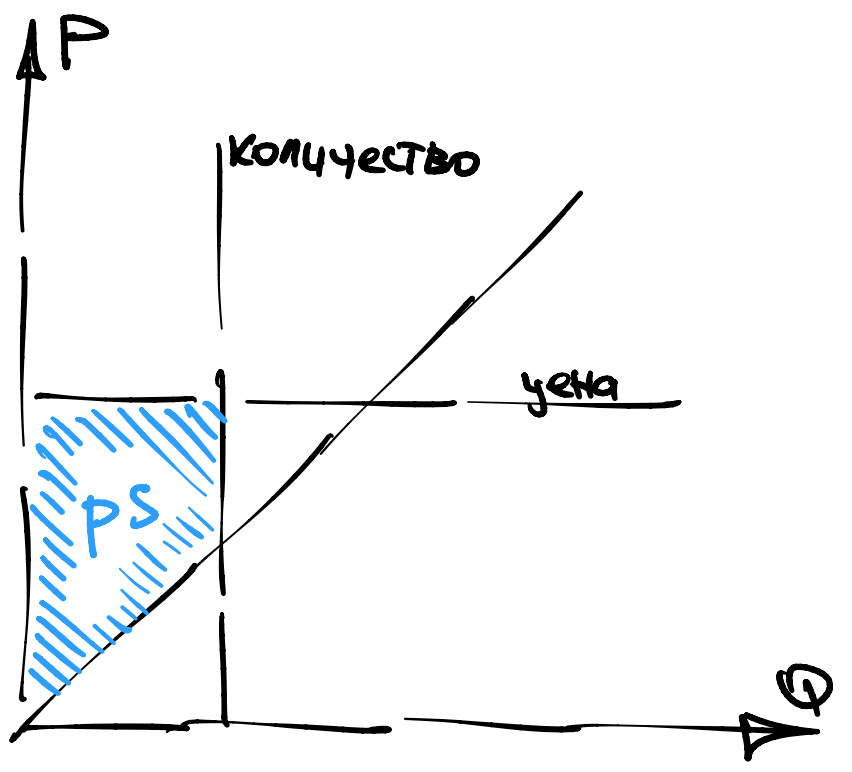
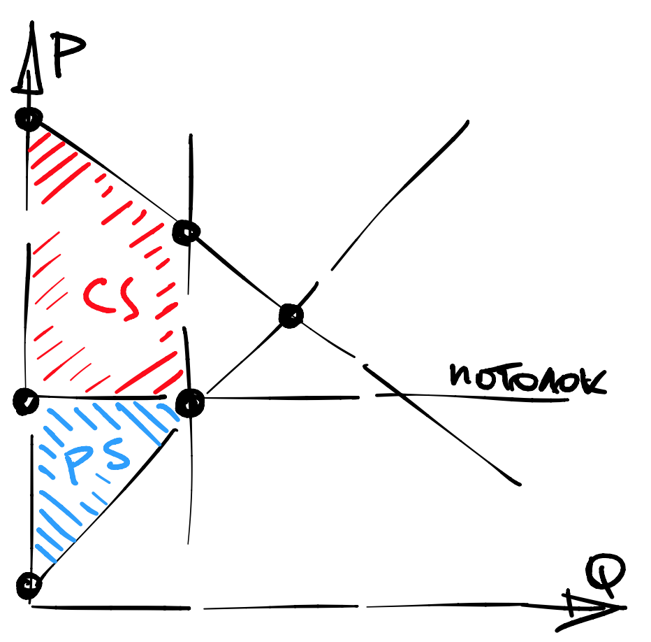
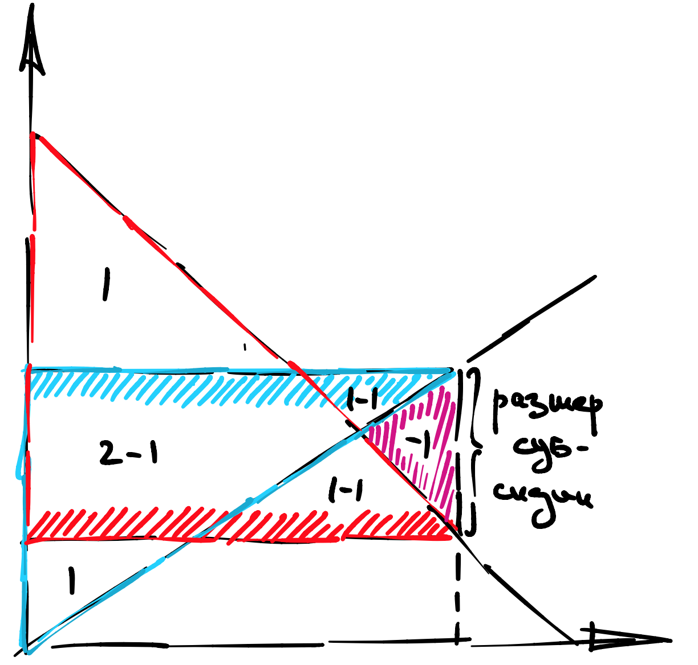
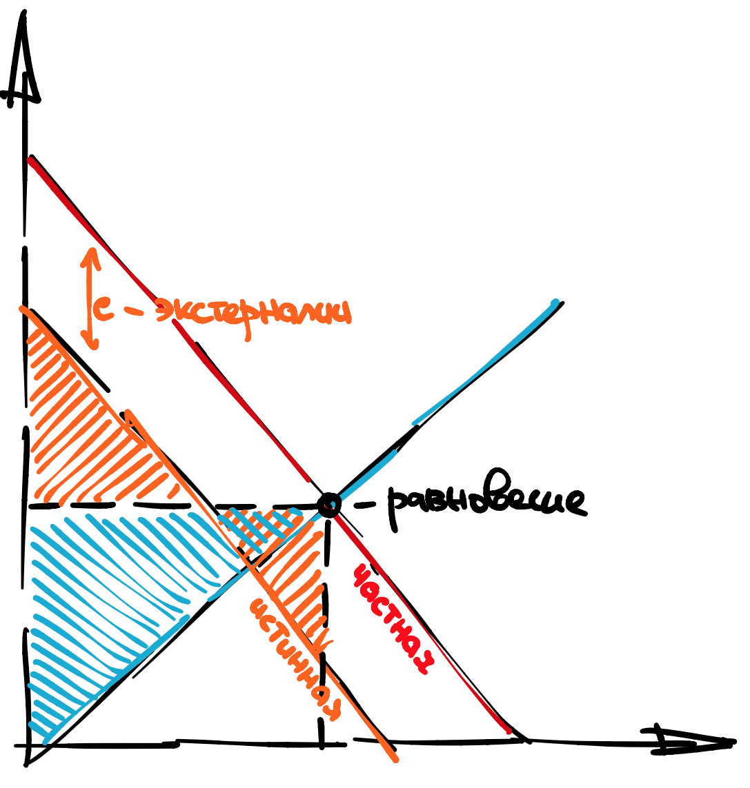

Седьмая лекция
Contents
Седьмая лекция¶
В этой секции я буду использовать \(Q\) для обозначения объемов производства (не путать с ценами факторов \(q\)) и \(P\) для обозначения цены (не путать с ценой конечного товара \(p\)).
Частичное равновесие¶
Мы ввели на прошлой неделе понятие частичного равновесия. Это, по сути, пересечение агрегированной кривой маршаллианского спроса с агрегированной кривой предложения. Есть несколько нюансов:
кривая спроса она обратная, то есть \(P(Q)\), а не \(Q(P)\), как мы привыкли выводить;
кривая предложения – это просто \(P = MC(Q)\), если нет \(FC\);
если \(FC\) есть, то надо оторвать каждую индивидуальную кривую предложения на уровне точки закрытия.
То есть агрегированная кривая предложения может быть кусочно-непрерывной, если фирм много и точки закрытия у них разные.
Но мы так делать не будем! Чаще всего мы будем давать вам кривые спроса и предложения просто так.
Излишек потребителя¶
Definition 54
Излишком потребителя, или \(CS\), в модели равновесия называется площадь под кривой спроса, но над ценой, которую ощущает потребитель. Если есть ограничение торговли по любой причине, то это также слева от ограничения.
Есть разные интерпретации этой площади.

Первая интерпретация CS¶
Будем считать, что спрос образован большим количеством агентов, каждый из которых имеет единичный (или очень маленький 0.001) спрос. Тогда, приближая убывающую кривую спроса столбиками, мы можем сказать, что высота первого столбика – это самая высокая готовность платить среди всех агентов. Второй столбик – это следующая за ней, и так далее.
Агенты как вы выстраиваются в очередь, и в начале очереди встают те, кому больше всех надо.
Это все классно, но у нас все спросы гладкие. Как быть?
Вторая интерпретация CS¶
Будем считать, что спрос образован, для простоты, одним агентом с гладкой кривой спроса. Тогда можно доказать, что CS – это грубое приближение к компенсирующей и эквивалентным вариациям.
На самом деле, легко видеть, что CS прямо-таки зажат между CV и EV, если мы рассматриваем изменение цены, приводящее к нулевому потреблению интересующего нас товара, то есть к \(Q=0\).

Более того, если полезность квазилинейная, то еще и \(CV = EV\). Почему?
Зазор между (наклонами) хиксианского и маршаллианского спроса в формуле Слуцкого пропорционален \(\partial m/ \partial I\), а в квазилинейных моделях, во внутренних точках, эффект дохода равен нулю.
Property 36
Верно, что
а в случае квазилинейной полезности
Экономист волен сам выбирать удобную ему меру излишка потребителя. Как правило, мы выбираем то, что проще считается. Если полезность не квазилинейная, CS – всё равно хорошая мера излишка потребителя благодаря второй интерпретации.
Излишек производителя¶
Definition 55
Излишком производителя, или \(PS\), в модели равновесия (без фиксированных издержек) называется площадь над кривой предложения, но под ценой, которую ощущает производитель. Если есть ограничение торговли по любой причине, то это также слева от ограничения.
Если фиксированных издержек нет, и фирма одна, то это просто \(P=MC(Q)\). Если фирм несколько, то это суммированные горизонтально \(Q_{\sum} = \sum_i MC_i^{-1}(P)\).
{kind=link}
Проблем в интерпретации излишка производителя меньше, так как это прямо-таки кривая \(P = MC(Q)\). Единственный подвох – это фиксированные издержки, их надо дополнительно вычесть из \(PS\).
Definition 56
Общим излишком, или \(TS\), в модели равновесия называется площадь над кривой предложения, но под кривой спроса. Если есть ограничение торговли по любой причине, то это также слева от ограничения.
Альтернативно, можно сказать, что
где \(T\) – это разнообразные налоги и пошлины, собранные государством. Но точная формула зависит от контекста. К примеру, PS может вовсе исчезнуть, если производитель иностранный.
На злобу дня¶
Предположим, что есть страна-экспортер газа. Домашний рынок описывается кривыми \(P = 10 - Q\) и \(P = Q\). Попробуйте сразу догадаться, какая из них спрос, а какая – предложение. Также есть крупный внешний потребитель газа, с кривой спроса \(P = 10 - Q/2\).
Вопрос. Если экспорт прекратится, что произойдет с ценой на газ дома, а также как изменятся излишки потребителя и производителя.
Как мы будем ее решать?
Шаг 1. Просуммировать спросы аккуратно.
Шаг 2. Найти равновесие с экспортом и без.
Шаг 3. Найти CS и PS, но без внешнего производителя.
Поехали:
Посмотрим на излишки потребителя:
Ясное дело, домашние потребители выиграли от падения цены.
Посмотрим на излишки производителя:
Легко видеть, что производитель потерпел колоссальные убытки из-за потери доступа к иностранному рынку. А это зарплаты, налоги, инфраструктура…
Регулирование цен¶
Мы рассмотрим три типа регулирования цен: пол, потолок, налог и субсидию. Для простоты у нас будет одна кривая спроса \(P = 8 - Q\) и одна кривая предложения \(P = Q\). Равновесие ищется тривиально геометрически, это \(P^{\ast} = Q^{\ast} = 4\).
Поскольку наклоны одинаковые, у нас всегда будут получаться площади равнобедренных треугольников и иногда трапеций. Площадь такого треугольника со стороной \(x\) равна \(x^2/2\).
Потолок цены (price ceiling)¶
Зачастую, когда государство пытается защитить какой-то слой потребителей (например, пенсионеров), но не очень хорошо понимает, кому давать на руки и сколько денег, оно вводит ограничение сверху на цену продукта (гречки), который занимает большую долю в корзине этих потребителей.
Пусть потолок равен \(P^{\ast} = 2\). Как изменится равновесие?
Заметим, что при такой низкой цене потребители рады купить \(Q = 6\), но производители готовы поставить только \(Q = 2\). Соответственно, на рынке образуется дефицит и будет продано наименьшее из двух:
Как изменятся PS и CS?
Излишек производителя уменьшится:
Излишек потребителя изменится чуть сложнее:
Я разложил трапецию на прямоугольник и треугольник.
{kind=link}
Пол цены (price floor)¶
Пол цены, то есть ограничение снизу, встречается более редко.
Пусть пол равен \(P^{\ast} = 6\). Как изменится равновесие?
Заметим, что при такой высокой цене потребители готовы купить только \(Q = 2\), несмотря на то, что производители готовы поставить целых \(Q = 6\). Соответственно, на рынке образуется избыток и будет продано наименьшее из двух:
Как изменятся PS и CS?
Излишек потребителя уменьшится:
Излишек потребителя станет трапецией:
DWL (дэ-вэ-эл)¶
Обратим внимание, что в обоих случаях объем меньше, чем мог бы быть. За счет этого сумма PS и CS упускает маленький треугольничек слева от точки равновесия. Эта площадь называется DWL, от английского deadweight loss - что-то потерянное безвозвратно.

Налог¶
Налог на товар бывает двух видов.
Налог на производителя повышает издержки, тем самым отодвигая кривую предложения вверх.
Налог на потребителя понижает полезность, тем самым отодвигая кривую спроса вниз.
Любопытным является тот факт, что с точки зрения анализа равновесия, оба сценария эквивалентны. Оба вида налогов можно представить себе как пару цен, одна ощущается потребителем, другая - производителем. Расстояние между этими ценами равно в точности налогу, а положение такое, что спрос в более высокой цене потребителя равен предложению в более низкой цене производителя.

Налоговые сборы \(T\) равны размеру налога, умноженному на равновесный \(Q\).
Субсидии¶
Аналогичным образом, субсидия раздваивает цену, но так, что потребитель в итоге видит более высокую цену, чем потребитель.
Субсидии \(T\) равны размеру субсидии, умноженной на равновесный \(Q\). Чтобы вычислить DWL, надо посчитать, сколько раз каждая область вошла в PS, CS и субсидию T.
{kind=link}
Получается, что в обоих случаях DWL - это площадь маленького треугольника слева (для налога) или справа (для субсидии) от точки равновесия.
Налоги и экспорт¶
Заметим, что DWL равен нулю, когда налоги или субсидии отсутствуют. То есть наилучшей является ситуация, в которой государство никак не вмешивается в экономику.
Однако это становится менее очевидно, когда потребитель иностранный. Тогда в модели частичного равновесия даже самый маленький налог всегда лучше, чем отсутствие налога. В то же время максимальный налог бесполезен, поскольку торговли не будет. Получается, что будет внутреннее решение.

Для простоты у нас будет одна кривая (иностранного) спроса \(P = 8 - Q\) и одна кривая (домашнего) предложения \(P = Q\). Дефолтное равновесие ищется тривиально геометрически, это \(P^{\ast} = Q^{\ast} = 4\), a TS – это нижний (так как мы производим) треугольник с площадью \(4^2/2 = 8\). Теперь введем налог размера \(\tau\).
Как изменится равновесие и \(TS = PS + T\)?
Чтобы решить такую абстрактную задачу, надо ввести две цены:
цена покупателя \(P_D\),
цена продавца \(P_S\).
Расстояние между этими ценами должно равняться в точности налогу
причем цена покупателя обязательно выше (это же налог), а соответствующие спросы должны равняться друг другу
получается, что
Убедимся, что \(Q(\tau) \leqslant 4\). Получается, что
Для того, чтобы найти оптимальный налог, надо промаксимизировать параболу:
решение будет равноудалено от корней \(8\) и \(-2/3\), то есть \((8-2/3)/2 = 11/3\).
Налоги и импорт¶
Похожая ситуация с импортом, то есть, когда производитель иностранный. Снова в модели частичного равновесия даже самый маленький налог всегда лучше, чем отсутствие налога. В то же время, максимальный налог бесполезен, поскольку торговли не будет. Получается, что будет внутреннее решение.

Равновесие в импорт-экспорт¶
А что если страна-импортер и страна-экспортер одновременно вводят налоги друг на друга? Решить такую задачу можно только в равновесии Нэша.
Используем предыдущую постановку, и пусть
где \(\tau_i\) - налог на импорт, а \(\tau_e\) - налог на экспорт.

Получается, что импортер максимизирует
а экспортер максимизирует
Мы будем искать симметричное (так как задача симметрична) равновесие Нэша - тройку \((\tau_i,\tau_e, \tau)\) такую, что \(\tau_i = \tau_e = \tau/2\), и такую, что \(\tau_i\) является наилучшим ответом импортера на \(\tau_e\) и наоборот.
Наберемся храбрости и начнем дифференциировать (любую из двух задач)…
Продолжаем дифференциировать…
Вспоминаем, что \(\tau = \tau_i + \tau_e\):
Умножим все на два
Получается, что в равновесии Нэша: \(\tau_i = \tau_e = 8/3\), а суммарный налог \(\tau = 16/3.\)
Экстерналии¶
Экстерналии можно моделировать по-разному.
ввести новый объект \(E\) и добавить (если экстерналии положительные) его к общему излишку;
мысленно сдвинуть кривую спроса на некоторое число \(e\).
Первый способ¶
Если ввести новый объект \(E(Q)\), тогда
К примеру, суммарные экстерналии могут выглядеть как \(E(Q) = Q, Q^2, \sqrt{Q}\)… и вам надо будет что-то помаксимизировать.
Второй способ¶
Если мысленно сдвинуть кривую спроса на некоторое число \(e\)
то это означает, что за каждую единицу купленного товара выделяются (отрицательные) экстерналии. Соответственно, мы говорим, что потребители терпят эти экстерналии, а значит при подсчете \(CS\) надо брать не площадь под \(P_D\), а площадь под \(P_D^{true}\).
По сути, это то же самое, что первый способ, просто \(E(Q) = - e Q\), как площадь параллелограмма.
{kind=link}
Можно сказать, что \(P^{true}_D\) - это истинная, или социальная, кривая спроса. Однако не стоит забывать, что потребители ведут себя эгоистично и не знают о существовании \(P^{true}_D\), поэтому равновесие определяется при помощи \(P_D\) а не \(P^{true}_D\).